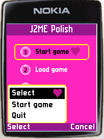

Download resources.
J2ME Polish makes it easy to adjust the design to specific devices or
device groups. You can try completely different designs just
by using a different resources-folder. For the application
screen-shots a simple application is used, which just shows
a main menu with the standard javax.microedition.lcdui.List
class.
|
 |
| The barbie design uses the after attribute for the focused-style. | |
/* The polish.css files contains all
design information about a project.
It can be adjusted for specific devices
or device groups by putting it in the
appropriate sub-folder.
If you want to adjust a design for all
Nokia devices, define it in resources/Nokia/polish.css
and so on. Only new and different settings
need to be specified in such polish.css files.
To keep this example easy, no subfolders are
actually used here.
*/
/* the colors which are defined in
the colors section can later be referenced.
This makes changes easy, since the color
just needs to be changed in one position.
Even default colors (like blue, green, lime, etc)
can be changed here.
*/
colors {
pink: rgb(248,39,186);
darkpink: rgb(185,26,138);
lightgray: #C9C9C9;
}
/* the menu style is a predefined style for
designing the fullscreen-menu.
The font-settings (font-color,
font-face, font-style and font-size)
are used to design the menu-texts
(like Options, Select, or Cancel).
With the focused-style attribute
another style than the default "focused"
style is used for the menu.
The menubar-color can be set to any
color. When "transparent" is used,
the background shines through.
*/
menu {
margin-left: 2;
padding: 2;
background {
type: round-rect;
color: white;
border-width: 2;
border-color: yellow;
}
focused-style: .menuFocused;
menubar-color: darkpink;
font-color: white;
font-style: bold;
}
/* The menuItem style is a predefined style
for the actual commands in a fullscreen-menu.
When the menuItem style is not defined,
the menu style will be used instead.
*/
menuItem {
margin-top: 2;
padding: 2;
padding-left: 5;
font {
color: black;
size: medium;
style: bold;
}
layout: left;
}
/* This is a custom style for selected
menu items. It is used, because it has
been defined in the menu style.
*/
.menuFocused extends .menuItem {
background-color: black;
font-color: white;
layout: left | horizontal-expand;
after: url(dot.png);
}
/* The title style is a predefined style which is used
for all screen-titles.
*/
title {
padding: 2;
margin-top: 0;
margin-bottom: 5;
margin-left: 0;
margin-right: 0;
font-face: proportional;
font-size: large;
font-style: bold;
font-color: white;
background-color: darkpink;
border: none;
layout: horizontal-center | horizontal-expand;
}
/* The focused style is a predefined style which
is used by lists, forms, choice-groups and so on.
This style will be used for highlighting the currently
focused item.
An interesting attribute is the "after" attribute which
results in the heart which is painted after the currently
focused item.
*/
focused {
/* before: url(dot.png); */
padding: 3;
padding-left: 10;
padding-right: 5;
padding-horizontal: 10;
background-type: round-rect;
background-arc: 8;
background-color: pink;
border {
type: round-rect;
arc: 8;
color: yellow;
width: 2;
}
font {
style: bold;
color: black;
size: small;
}
layout: expand | left;
after: url(dot.png);
}
/* The .mainScreen style is a static style, which
is set in the MIDlet source-code with the //#style directive.
If the source-code would not have defined this
style, we could use the dynamic style "list" to design all
list-screens.
An interesting feature is the used background, which is
animated. It starts with a white backgrounds which is
transformed in 30 steps to a pink one. After that the animation
is stopped.
*/
.mainScreen {
padding: 5;
padding-left: 15;
padding-right: 15;
background {
type: pulsating;
start-color: white;
end-color: pink;
steps: 30;
repeat: false;
back-and-forth: false;
}
layout: horizontal-expand | horizontal-center | vertical-center;
}
/* The .mainCommand style is also a static style, which
is set in the MIDlet source-code with the //#style directive.
If the source-code would not have defined this
style, we could use the dynamic style "listitem" to design all
items on the list-screens.
An interesting attribute is the "icon-image" URL, which uses
the %INDEX% keyword. The first list-item will use the image
"icon0.png", the second "icon1.png" and so on.
*/
.mainCommand {
margin: 2; /* for the missing border of the focussed style */
padding: 3;
padding-left: 10;
padding-right: 5;
padding-horizontal: 10;
background: none;
font-color: white;
font-style: bold;
font-size: small;
layout: left;
icon-image: url( icon%INDEX%.png );
icon-image-align: left;
}
Please send me your designs to j2mepolish@enough.de, so I can add them to this list.